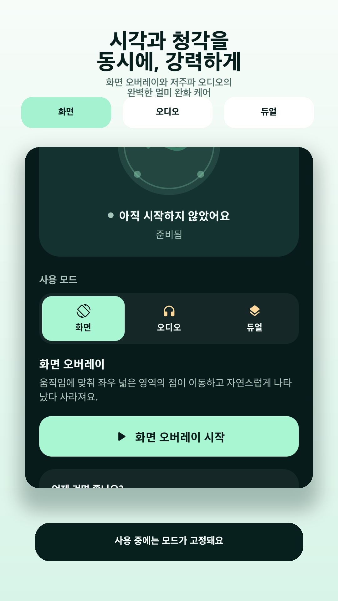

Android
디지털 멀미 치료제
움직임에 반응하는 가장자리 점과 선택형 헤드폰 전용 100Hz 톤을 제공하는 화면 도구입니다.



움직임을 화면 가장자리로 보여주기
차·버스·기차에서 휴대전화 화면을 볼 때 불편함을 느끼는 상황을 위해, 기기의 움직임을 화면 가장자리 점으로 보여주는 Android 감각 보조 도구입니다.
화면·오디오·듀얼 모드
움직임에 반응하는 점을 띄우거나 이어폰으로 은은한 100Hz 톤을 들을 수 있으며, 두 기능을 함께 쓰는 듀얼 모드도 제공합니다.
- 화면: 움직임 반응 가장자리 점
- 오디오: 이어폰 전용 100Hz 톤
- 듀얼: 화면 점과 오디오 동시 사용
- 빠른 설정 타일과 실행 중 알림
- 움직임 센서 값의 기기 내 실시간 처리
탑승 후 출발 전에 화면·오디오·듀얼 모드 중 하나를 고르고 시작합니다. 불편함이 심해지면 즉시 중지하고, 이어폰 연결이 끊기면 오디오도 멈춥니다.
탑승 전에 켜는 사용 순서
이동 중 화면을 봐야 하지만 불편함을 줄이고 싶은 사용자에게 맞습니다. 화면 중앙의 영상·글·지도 콘텐츠를 가리지 않고 주변 움직임을 확인하는 흐름을 지향합니다.